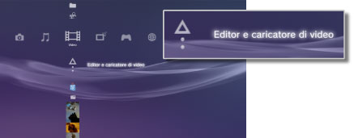
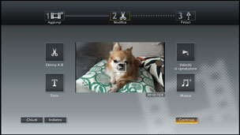

Video > Modifica del contenuto video
Modifica del contenuto video
È possibile modificare il contenuto video salvato nella memoria di sistema PS3™.
1. |
Selezionare |
|---|---|
|
 |
|
2. |
Selezionare |
3. |
Selezionare |
4. |
Modificare il video. |
|
 |
|
5. |
Selezionare [Concludi]. |
 (Video) >
(Video) >  (Crea nuovo video).
(Crea nuovo video). (Modifica) è possibile rimuovere scene specifiche oppure aggiungere testo o caratteri. Per completare l'operazione, seguire le istruzioni sullo schermo. Il video modificato può essere visualizzato in anteprima selezionando
(Modifica) è possibile rimuovere scene specifiche oppure aggiungere testo o caratteri. Per completare l'operazione, seguire le istruzioni sullo schermo. Il video modificato può essere visualizzato in anteprima selezionando  .
.Note
- Selezionando
 (Aggiungi) nel punto 3, è possibile continuare ad aggiungere elementi di contenuto e combinarli in un unico file video.
(Aggiungi) nel punto 3, è possibile continuare ad aggiungere elementi di contenuto e combinarli in un unico file video. - Il tempo di massimo di riproduzione per il contenuto video modificato è pari a un'ora.
- È possibile aggiungere fino a 16 elementi di testo in una schermata e fino a 200 elementi di testo in un file video modificato.
- È possibile utilizzare unicamente brani preimpostati come musica di sottofondo per il video. I brani salvati nella memoria di sistema del sistema PS3™ o su altri supporti di memorizzazione non possono essere utilizzati.
Tipi di file che è possibile modificare
È possibile modificare i seguenti tipi di file in  (Editor e caricatore di video).
(Editor e caricatore di video).
- Contenuto video salvato nella memoria di sistema da un supporto di memorizzazione o da un dispositivo di archiviazione di massa USB (software di sistema versione 3.40 o successive).
- Contenuto video scaricato nella memoria di sistema da un
 (Browser per Internet) (software di sistema versione 3.40 o successive).
(Browser per Internet) (software di sistema versione 3.40 o successive).
Note
- Non è possibile modificare il video che è stato salvato nella memoria di sistema prima dell'aggiornamento del software del sistema alla versione 3.40, il video protetto dal copyright e il contenuto impostato con le restrizioni di controllo parentale.
- Fare attenzione a non violare la proprietà intellettuale di altri.